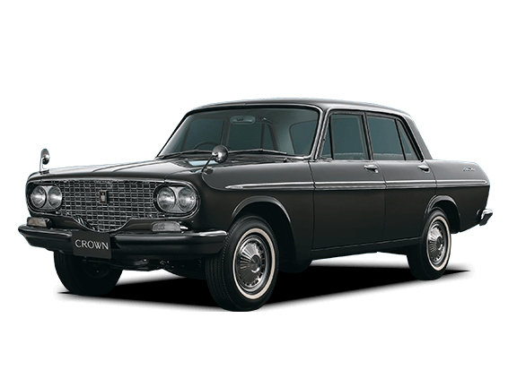
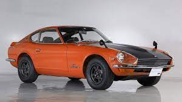

Изначально автомобиль был ориентирован на владельцев таксопарков. Производители считали, что наличие распашных дверей сзади и независимой подвески на колесах спереди не вызовет интереса у большого количества потребителей. Однако популярность Crown Deluxe на местном рынке стала стремительно расти, а у модели появилась своя целевая аудитория.
Toyota Crown Deluxe 1962
Nissan Fairlady Z432R
Спортивный автомобиль Nissan Fairlady в редкой модификации Z432R был продан за 805000 долларов. За счет этого уникальное купе получило статус не только самой дорогостоящей модели от Nissan, но и наиболее дорогой японской машины, проданной на аукционе. Начальная цена составляла около 670100 долларов.
Nissan Fairlady Z432R
Toyota Supra Twin Turbo MkIV
Спорткар комплектуется 3-литровым 330-сильным двигателем, который демонстрирует выдающие показатели мощности и эффективности при пиковых нагрузках. Кроме того, агрегат обладает отличной отказоустойчивостью и способен преодолеть до 500 000 км без серьезных поломок.